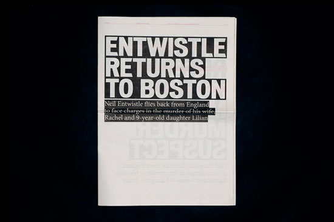
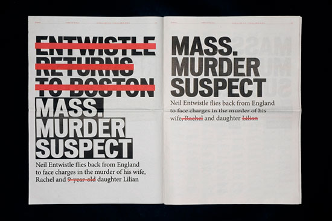
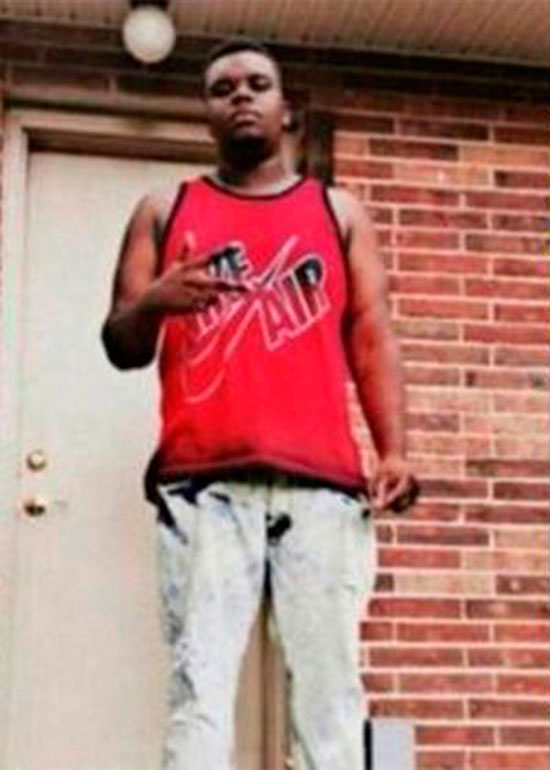
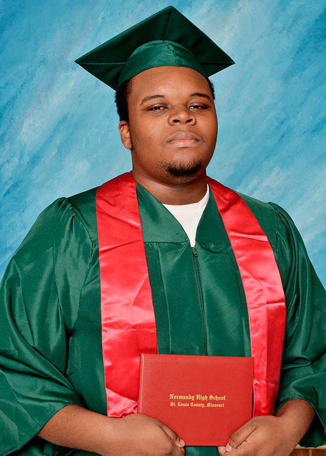
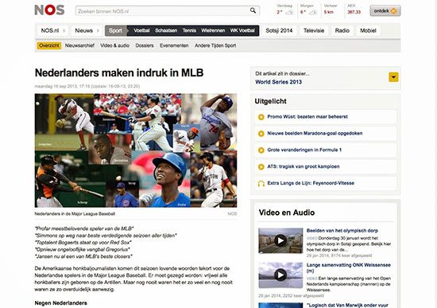
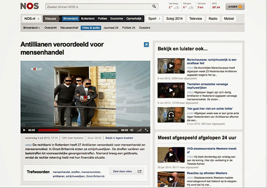

Samenvatting
Twee personen kunnen dezelfde daad verrichten, hierbij wordt de één als held en de ander als barbaar gezien. Waarom wordt de één als goed en de ander als slecht gezien en wanneer word je de één of de ander? Dit heeft te maken met de positie van de toeschouwer en hoe de nieuwsmedia hier mee omgaan. Nieuwsmedia zijn met name: kranten, radio televisie en internet. Via deze media krijgen we dagelijks een hoeveelheid aan nieuws te verwerken. Media die we vooral als een waarheidsgetrouwe informatiebron beschouwen. Maar klopt deze bewering wel? Kunnen de nieuwsmedia nog wel waarheidsgetrouw zijn in een mediawereld die grotendeels gebaseerd is op sensatie? Neem als voorbeeld de situatie met de Islamitische Staat (IS). De Westerse wereld keurt deze staat af en zien hun daden als barbaars. De executies die wij te zien krijgen via het nieuws bevestigen dit standpunt, maar de bombardementen op IS van de Westerse coalitie kunnen we ook als een barbaarse daad zien. Het volk van beide partijen zien hun strijders echter als helden. Beide nemen beelden uit de nieuwsmedia tot zich. Deze media kunnen bepalen wat het volk te zien krijgt, door bepaalde beelden wel of juist niet te tonen. Hierdoor hebben de nieuwsmedia de mogelijkheid om ons slechts één kant van het verhaal te laten zien. Om ons te doen laten geloven dat wat het Westen doet goed is en dat wat IS doet slecht is. Ofwel, wie de held en wie de barbaar is.
Waar komt de barbaar eigenlijk vandaan? En waarom komt deze constant terug in ons dagelijks leven? De tweede vraag is al interessant omdat we een barbaar eigenlijk nooit in ons eigen leven willen zien. De barbaar komt eigenlijk altijd voor in een andere samenleving, een samenleving die minderwaardig is ten opzichte van de eigen superieure samenleving. Om die samenleving intact te houden moeten de zwakkere erbuiten gehouden worden, deze zwakkere hoeft niet eens zwak te zijn. Maar omdat deze een bedreiging zou kunnen vormen wordt deze als zwak gezien, het wordt een zondebok die overal de schuld van krijgt.
Van deze zondebok kunnen de nieuwsmedia gebruik maken. Door deze constant in een slecht daglicht te plaatsen versterkt het negatieve gevoel wat de bevolking al had. Dit gevoel moet er overigens wel al zijn. De nieuwsmedia zijn goed in staat om een persoon of groep uit de samenleving te pakken en deze te koppelen aan meer negativiteit. Het slechte beeld dat er al van deze persoon of groep was versterkt, waardoor zijn meer slechte gevoelens zal oproepen bij het volk en als barbaar zal worden gezien. Dit zorgt voor een soort neerwaartse spiraal waardoor de barbaar aan de onderkant van de samenleving komt te staan. De vraag is of wij op een andere manier naar het nieuws moeten kijken.
1 Inleiding
Het nieuws is voor bijna iedereen een bekend ochtendritueel. Zo ook voor mij. Minimaal twee keer per dag kijk en/of lees ik het en indien mogelijk veel meer. Ik ben gefascineerd door de constante stroom aan informatie die uit alle hoeken van de wereld op me af komt. Een relletje hier, een epidemie daar en dat alles vanuit mijn eigen luie stoel. Af en toe lijkt het wel alsof ik naar een film zit te kijken. Misschien is dit juist waarom ik zo vaak naar het nieuws kijk. In de hoop dat ik even niet aan mijn eigen leven hoef te denken, als er bijvoorbeeld iets ergs gebeurd is. Zodra ik iets dergelijks zie ga ik meteen relativeren en krijg ik meteen het gevoel dat alles in mijn leven toch niet zo erg lijkt als het is. Er zijn altijd mensen die het zwaarder hebben.
Bijvoorbeeld de mensen die in Syrië en Irak leven, waarvan afgelopen zomer op willekeurige momenten beelden opdoken zoals IS-strijders die mensen bedreigen, gijzelen of op gruwelijke wijze executeren. Met veel angst en paniek werden deze nieuwsberichten, ook bij mijzelf, ontvangen. Door de beelden die mij getoond werden kreeg ik kippenvel, werd ik angstig en keurde ik deze groepering af. Ik keur elke vorm van geweld af. Ik ben niet gelovig, maar er is wel een zin uit de bijbel waar ik mij mee verbonden voel 'Gij zult niet doden'. Ongeveer twee maanden na de eerste berichten over IS hoor ik op het nieuws dat er een coalitie is gevormd die grotendeels bestaat uit Westerse landen. De coalitie zal militaire middelen gaan inzetten tegen de IS, wat mij toch wel een gevoel van opluchting gaf. Echter, ik begon nu mijzelf de vraag te stellen waarom ik de executies van IS afkeur maar de bombardementen van het Westen goedkeur.
Waarom zie ik IS als een barbaars volk en het Westen als helden? Ik geloof niet dat dit door mijn opvoeding of scholing komt. Er is nooit tegen mij gezegd: die mensen zijn slecht en die mensen zijn goed. Ik heb uiteraard een normen- en waardenpakket meegekregen, maar ik kan mij niet herinneren dat hier de definitie van barbaar en held bij inbegrepen zat. De media zouden hier dus een grote rol in kunnen hebben gespeeld, de informatiebronnen die mij een kijk op de wereld leveren.
Deze gedachte gaf mij stof tot nadenken, ik vind namelijk dat ikzelf niet snel beïnvloed word door de media, maar zodra er iets ergs gebeurt lijken, we allemaal iets minder rationeel te kunnen denken en laten we plots ons gevoel spreken. En waarom zou ik het nieuws niet geloven? Het doet zich voor als een onafhankelijk en objectief medium dat mij de waarheden van de wereld laat zien. Hierbij moest ik ook aan mijzelf als grafisch ontwerper denken. Ik werk graag met actuele onderwerpen en hierin probeer ik altijd objectief te blijven, maar in principe heb ik de macht om te laten zien wat ik wil en te bepalen in welke context dit wordt geplaatst, zonder dat ik mijzelf af hoef te vragen hoe dit door andere mensen ontvangen wordt. Het zou dus goed kunnen zijn dat ik mij door de nieuwsmedia onbewust heb laten beïnvloeden tijdens het creëren van bepaalde karakters bij bepaalde etniciteiten. Ondanks ik op geen enkele wijze in aanraking ben gekomen met deze mensen, groep of land heb ik er via het nieuws wel een beeld bij gecreëerd.
Waardoor ik op de onderzoeksvraag van mijn scriptie kom: hoe creëren de media een barbaar?
Het gaat hier dan voornamelijk over nieuwsmedia. Ik verwacht dat het onderwerp nieuwsmedia alleen al vrij ingewikkeld wordt, vandaar dat ik mij niet stort op de media in het algemeen, dat zou voor mij een veel te breed onderwerp worden.
Om de vraag te beantwoorden heb ik de twee belangrijkste elementen uit de vraag onderzocht. De barbaar en de media. Beide worden in een apart hoofdstuk behandeld. Hierbij kijk ik naar de geschiedenis van de onderwerpen en wat voor invloed het op ons mensen heeft. In het derde hoofdstuk zal ik aan de hand van een aantal voorbeelden de relatie tussen de twee onderwerpen laten zien.
2 De barbaar
2.1 De ontwikkeling van de barbaar
Het woord ‘barbaar’ ontstond lang geleden en was op dat moment nog vrij onschuldig. Bijna drieduizend jaar terug noemden de Grieken, en in navolging van hen de Romeinen, iemand een barbaar als die persoon niet dezelfde taal sprak, ofwel onverstaanbaar was. Het gebrabbel klonk in de oren van de Griek als ‘bar-bar-bar’ waardoor je ‘Barbaros’ werd genoemd als je de Griekse taal niet beheerste. Het was een onomatopee (klanknabootsing) van de vreemdeling die alleen maar wees op een taalverschil.
Maar mensen die raar praatten werden al snel gezien als onbeschaafd en- of onderontwikkeld. Door het bergachtige terrein was het Griekenland van de vijfde eeuw voor Christus politiek erg verdeeld. Elke stad, met het er direct omheen liggende land, was een zelfstandige staat, ofwel een stadstaat. Bekende stadstaten waren Athene, Sparta, Korinthe en Thebe. De gunstige ligging van de haven van Athene, in een drukke vaarroute, bevorderde de handel. Hierdoor werd Athene zeer welvarend.
Toen Athene besloot Griekse afstammelingen in Klein Azië (het huidige Turkije) te helpen in hun opstand tegen de Perzische koning, escaleerde dit tot de Perzische oorlogen. Dit zorgde ervoor dat de verschillende Griekse stadstaten een eenheid gingen vormen. De Griekse beschaving werd tenslotte bedreigd door de barbaren uit het Oosten. Hierdoor wees het woord barbaar in Griekenland niet alleen meer op een taalbarrière, maar ook op een verschil in beschaving, ideologie en soms zelfs een verschil in ras. Het woord werd overgenomen door het wij-zij denken. De barbaar kwam terecht in een fictieve tegenstelling, waarin het altijd de badguy moest zijn. Beschaving versus barbaars.
In het gedicht ‘In afwachting van de barbaren’1, van de Griekse dichter Konstantínos Kaváfis (1863 – 1933), vraagt hij zich af wie wij zijn zonder de barbaren. In dit gedicht herhaalt de ene spreker steeds dat de barbaren komen. Normaal zorgt herhaling ervoor dat een bewering krachtiger overkomt, alleen hier werkt het averechts. De spreker klinkt op het einde als een soort papegaai, waardoor de herhaling een betekenisloos geluid wordt. Kaváfis vraagt zich af of die barbaren een verzinsel zijn die ons helpen te vertellen wie we zijn. Op het moment dat de barbaren er niet blijken te zijn, dan is het andere deel van de tegenstelling, namelijk de beschaving, meteen in gevaar. De barbaren komen niet... Wat nu? Nu moeten de burgers zelf met oplossingen komen.
1. In afwachting van de barbaren
Waar wachten wij op, bijeengekomen op de agora?
Op de barbaren die vandaag komen.
Waarom wordt in de Senaat niets gedaan?
Zitten de Senatoren daar zonder wetten te maken?
Omdat de barbaren vandaag zullen komen.
Waarom zouden de Senatoren dan nog wetgeven?
Dat zullen de barbaren doen wanneer ze zijn gekomen.
Waarom is onze keizer zo vroeg opgestaan
en zit hij bij de grootste poort van de stad
plechtig op zijn troon, de kroon op ‘t hoofd?
Omdat de barbaren vandaag zullen komen.
De keizer wacht om hun aanvoerder te ontvangen
en houdt zelfs een oorkonde klaar
die hij hem geven
wil. Daarop schreef hij
veel titels, erenamen voor hem neer.
Waarom verschenen onze twee consuls vandaag
en de praetoren in hun rode, geborduurde toga’s;
waarom dragen ze armbanden met al die amethisten
en ringen met prachtige, vonkende smaragden;
waarom torsen ze vandaag kostbare staven
met zilver en goud fraai geciseleerd?
Omdat de barbaren vandaag zullen komen en
zulke dingen verblinden de barbaren.
Waarom komen ook niet als altijd de waardige rhetoren
om redevoeringen te houden, om het hunne te zeggen?
Omdat de barbaren vandaag zullen komen,
hun mishaagt woordomhaal, welsprekendheid.
Waarom begint er nu opeens die onrust
en die verwarring (Wat werden de gezichten ernstig).
Waarom lopen snel straten en pleinen leeg,
en keert
ieder naar huis, verzonken in gedachten?
Omdat de nacht viel en de barbaren niet kwamen.
Enkele lieden, net binnen uit de grensstreek,
zeiden dat
er geen barbaren meer zijn.
Wat moet er nu van ons worden, zonder barbaren.
Die mensen waren tenminste een oplossing.
2.2 Angst
Waarom hebben we de barbaren zo hard nodig? Dit heeft simpelweg te maken met angst. Kijkend naar Nederland, wilde het kabinet in 2013 een participatiesamenleving invoeren. Ofwel: voor jezelf en de ander verantwoordelijkheid nemen, in goede en slechte tijden, ongeacht huidskleur, accent, leeftijd of sekse. Dit lijkt een ideale manier om met elkaar om te gaan binnen de samenleving, maar in de praktijk bleek deze verbroedering zich in een totaal andere vorm te uiten dan verwacht. De keren dat we ons als Nederlanders met elkaar verbonden voelden, ontstond zelden uit oprechte naastenliefde. Veel belangrijker is namelijk het hebben van een gezamenlijke vijand.
Alhoewel Nederland niet een directe vijand heeft, verhoogde de Nationale Coördinator Terrorismebestrijding en Veiligheid1 in maart van 2013 het dreigingsniveau van ‘beperkt’ naar ‘substantieel’. Dit betekende dat de kans op een aanslag tegen Nederland reëel werd. Hierbij gaat de Nederlandse regering er vanuit dat er jihadistische2 bewegingen in het Westen en daarmee ook in Nederland zijn. Deze ontwikkelingen bevestigen de noodzaak om als Nederlandse overheid alles in werking te stellen om aanslagen te voorkomen en tegen te gaan, om zo onze open samenleving en democratie te beschermen. Aanslagen op militairen en politieagenten in Canada en de VS, het verhinderen van complotten in diverse westerse landen en de trends van radicalisering en uitreis naar Syrië en Irak, bevestigen de gevaren.
Je kan de dreigingen vanuit het Midden-Oosten vergelijken met de dreiging van de Perzen voor de Grieken; de stadstaten gingen samenwerken om de dreiging te remmen. Waar de Grieken de Perzen als barbaren zagen, zien wij de terroristen nu als barbaren. Door deze mensen als barbaren te zien, komen we weer terug op het wij-zij denken wat ook de Grieken deden. Namelijk wij, de beschaving, versus zij, de barbaren. De anderen zijn barbaren, dus die hoeven we niet te respecteren en hun standpunten niet proberen te begrijpen. Die manier van denken helpt de Westerse overheden de strijd tegen de Islamitische Staat te verantwoorden. Oorlog tegen de barbaren.
Nu heeft het Westen de stempel van barbaar op IS gezet. Dit boezemt angst in bij de Westerse bevolking. Maar angst speelt de terroristen in de kaart, want dat is uiteindelijk hun doel: de samenleving overhoop halen. De Islamitische Staat heeft de online-jihad naar een nieuw niveau gebracht. Terreurorganisaties hebben de laatste jaren hun activiteit verplaatst naar sociale media omdat veiligheidsdiensten hun websites gemakkelijk platlegden. Twitter, YouTube en Facebook zijn bovendien eenvoudig te gebruiken. IS bereikt op deze manier veel sneller een veel groter publiek. In het Westen is het gebruik van sociale media zo ingeburgerd, dat de impact veel groter is.
2.3 Wij-zij denken
Voor het wij-zij denken is het woord zondebok een goed voorbeeld. Het woord is waarschijnlijk het meest bekend in zijn figuurlijke betekenis van de onschuldige die voor andermans problemen opdraait en/of waar anderen zich op afreageren. In de Van Dale, het standaardwoordenboek van het Nederlands, staat bij zondebok: 'bok die de woestijn werd ingejaagd, nadat hij met de ongerechtigheden van het volk was beladen' en: 'persoon op wie anderen hun schuld werpen, of die het gestadig voorwerp van hun plagerijen en beschimpingen is: hij is altijd de zondebok van het gezelschap.'
The Oxford English Dictionary geeft bijna dezelfde omschrijving van het Engelse woord voor zondebok: scapegoat, maar vermeldt naast de bok die de woestijn in werd gezonden, een tweede die werd aangewezen om geofferd te worden. De omschrijving van het van scapegoat afgeleide woord scapegoating1 is interessant, omdat het aangeeft dat de zondebok haast vanzelfsprekend de zwakkere is.
René Girard, oorspronkelijk historicus maar tegenwoordig hoogleraar Franse taal, letterkunde en cultuur in Californië, heeft het woord zondebokmechanisme2 bedacht. Het zondebokmechanisme komt in het kort hierop neer: mensen hebben de neiging elkaar te imiteren en dus ook dezelfde dingen te begeren. Maar omdat mensen ook op een bepaalde manier uniek willen zijn, brengt dit tegelijkertijd afgunst en strijd waardoor op een gegeven moment in een samenleving een situatie van wanorde en onduidelijkheid ontstaat. Mensen weten niet meer waar ze aan toe zijn en schuiven de schuld van de chaos die is ontstaan af op een zondebok en willen dat deze vervolgd wordt. De zondebok kan een eenling zijn maar ook een groep. Ook al is hij onschuldig, hij is dat in de ogen van de vervolgers niet. Meestal heeft de samenleving even de tijd nodig om deze zondebok te verwerken en tot de conclusie te komen dat deze onschuldig is. Wanneer de orde zich vervolgens herstelt, brengt men de zondebok en het ordeherstel met elkaar in verband en komt men tot de conclusie dat de herstellende orde te danken is aan de zondebok. Wanneer echter na verloop van tijd weer een situatie van chaos ontstaat, herinnert men zich hoe de vorige keer de orde hersteld werd en opnieuw tot vervolging van een zondebok wordt overgegaan. Het principe van de zondebok is in alle culturen terug te vinden. In heksenvervolgingen, zoals die bijvoorbeeld ook vandaag nog in Zuid-Afrika voorkomen, is het patroon heel herkenbaar. Denk aan slechte omstandigheden, bijvoorbeeld het mislukken van de oogst, die worden toegeschreven aan de boze invloed van oudere vrouwen, heksen, die dan verdreven of gedood worden, waarna de vrede tijdelijk terugkeert.
Als we kijken naar de Universele Verklaring van de Rechten van de Mens3 gaan we er vanuit dat de mensen in principe aan elkaar gelijk zijn. Zo luidt ook het eerste artikel van de Nederlandse grondwet2: 'Allen die zich in Nederland bevinden, worden in gelijke gevallen gelijk behandeld. Discriminatie wegens godsdienst, levensovertuiging, politieke gezindheid, ras, geslacht of op welke grond dan ook, is niet toegestaan. Hierdoor staat de één niet boven de ander. Hierbij gaan we er dus vanuit dat alle culturen gelijk staan aan de andere'.
Maar waarom laten we artikel4 los als we ons over de Nederlandse grens bevinden. Het wij-zij denken hebben we allemaal wel eens meegemaakt, bijvoorbeeld als we op vakantie zijn. We vergelijken meteen onze vakantiebestemming met thuis. Hoe fijn de vakantie ook is, we zijn allemaal weer blij als we in ons eigen bed liggen, want dat ligt toch net wat beter dan dat van hen, of wanneer we weer onder onze eigen douche staan, want die heeft toch een net wat lekkerdere straal dan die van hen, daar in het buitenland.
Deze manier van denken zorgt ervoor dat wij ons verheven voelen boven de ander. Ik heb het beter dan de ander. Wat een bepaald gevoel van superioriteit met zich meebrengt. Dit ligt in de aard van de mens. Als we bijvoorbeeld kijken naar hoe de Japanners in de negentiende eeuw een Nederlander omschreven, zeiden ze het volgende: 'de Nederlander is een grove, lompe onaangenaam ruikende barbaar met een grote neus en rood haar.'5 De Nederlanders zagen dat uiteraard heel anders want over en weer bekijken mensen elkaar met dezelfde superieure blik. Pogingen om hier anders over na te denken, worden tegengehouden door de koppige aanpak om de eigen wereld constant als de best mogelijke aller werelden te beschouwen.
3 De nieuwsmedia
3.1 Onze nieuwsgierigheid naar de wereld
Met tussenpozen van tien minuten tot maximaal een nacht, onderbreken we even alles wat we doen om te kijken of er nieuws is. We zetten ons leven even in de wacht om vervolgens een dosis informatie te ontvangen over alle belangrijke prestaties, rampen, misdaden, epidemieën en romantische verwikkelingen die de mensheid waar dan ook op aarde is overkomen, sinds de vorige keer dat we even keken. Nooit eerder was het nieuws zo toegankelijk als nu. Het nieuws kunnen we op elk willekeurig moment van de dag benaderen. We bekijken het nieuws even snel op onze smartphones of tablets, achter de pc, op de tv, in kranten en tijdschriften. Het nieuws is overal om ons heen en bepaalt in grote mate de manier waarop wij naar de wereld kijken.
Maar is deze nieuwsgierigheid naar de wereld een nieuw fenomeen? Nee, juist niet. Het verzamelen en doorvertellen van nieuws dat zich buiten ons eigen leven afspeelt, is zo oud als de mensheid zelf. We willen constant weten wat er buiten onze eigen wereld afspeelt. Die nieuwsgierigheid is een sociaal zintuig, wat noodzakelijk is om als een sociaal wezen te functioneren. Door meer informatie tot ons te nemen kunnen we ons voorbereiden op anders onverwachte gebeurtenissen. Toch heeft het lang geduurd voordat zich uit de zogenaamde nieuwsverteller, wat voor de zeventiende eeuw iedereen was, een journalist ontwikkelde; een zo objectief mogelijke en waarheidsgetrouwe, regelmatige en beroepsmatige verzamelaar, brenger en analist van nieuwsfeiten en feitjes waar algemeen belang aan wordt gehecht.
In de prehistorie was de gesproken taal de enige manier om het nieuws te verspreiden. Echter hier is vrij weinig over bekend. Toch zijn er wel een aantal ideeën over hoe de mens in die tijd het nieuws verzamelde en verspreidde. Elke stad of dorp kende wel een gemeenschappelijke plaats waar bewoners en reizigers met elkaar in contact kwamen, zoals het kampvuur, de dorpshut of een plein. Daar werden nieuws, nieuwtjes en roddels uitgewisseld, die daarna weer verder doorverteld werden. Bij die uitwisseling ging het vooral over de dood, oorlog en gevaar. Maar zo werden ook noodzakelijke en meer alledaagse informatie uitgewisseld, over bijvoorbeeld het weer (wat belangrijk was voor de voedselvoorziening). Toen de samenleving groter werd, kwamen er steeds meer mensen die zich in het nieuws gingen verdiepen, zo ontstonden er omroepers en boodschappers. Zij waren belangrijk voor de heersers om hun macht en aanzien te vergroten. Het probleem voor de oude samenleving was dat mondeling nieuws veel werd vervormt en daardoor onnauwkeurig was. Dit kan je vergelijken met met wat er gebeurt bij de volgende oefening: zet een stuk of zes personen op een rij, persoon 1 fluistert een kort verhaal in het oor van persoon 2 en dit herhaalt zich tot en met persoon 6. Zodra het verhaaltje het einde van de rij heeft gehaald, is dit gedeeltelijk of compleet veranderd. Daarom werd er vaak gebruik gemaakt van clichés en gezegden, maar ook die konden de fouten in het systeem niet helemaal wegnemen. De afstanden tussen de dorpen en steden zorgden ervoor dat dit systeem niet waterdicht was. Om de toegankelijkheid van het nieuws voor het publiek te vergroten, werd het nieuws ook vaak gebracht in de vorm van rijmpjes en liedjes.
Het beroep journalist zoals we dat nu kennen vormt zich pas aan het einde van de zestiende eeuw. Zonder de journalist kan de parlementaire democratie niet werken. Alleen een van de staat onafhankelijk journalist kan de burgers feiten brengen waarmee deze kan kiezen uit de verschillende politiek-maatschappelijke richtingen. Tevens is het zo dat, zodra de journalist ongecensureerde feiten van de overheid naar buiten brengt, de macht van de overheid beperkt blijft en de democratie blijft bestaan. Hierdoor krijgen journalisten een publieke functie, door deze functie wordt de journalist zelf machtiger. Echter, er kan bij gebrek aan concurrentie nieuws ontstaan dat te veel vertekend is. Hierdoor zijn de eisen van de journalistiek in de loop der tijden aangepast: nieuwsberichten dienen zoveel als mogelijk vrij te zijn van elke mening of vooringenomenheid.
Altijd gaat het nieuws zowel over belangrijke als alledaagse zaken. Roddels over mensen trekken evenveel aandacht als belangrijk zakelijk nieuws. Het verschil tussen kwaliteitsnieuws en sensatie is letterlijk zo oud als de weg naar Rome. Hoe nieuws wordt verzameld en samengesteld hangt erg af van de normen en waarden in de samenleving, hoe de regering eruitziet en van de technische mogelijkheden. Zo werd door de uitvinding van de drukpers de mogelijkheid om nieuws over te brengen enorm vergroot, de komst van radio en televisie en later het internet, de computer en smartphones leverden voor een normale sterveling een nauwelijks meer beheersbare stroom aan informatie op.
Waarom kijken we als individu steeds of er nog nieuws is? Ook hier speelt angst een rol. Als we maar even niet het nieuws kunnen bekijken worden we al onrustig. We weten hoe vaak er dingen kunnen misgaan en hoe snel. Van het ene op het andere moment kan er een virus van een Afrikaanse vleermuis op een andere soort zijn overgegaan en de luchtroosters van een drukke Japanse forensentrein binnendringen, kunnen beleggers een run op de valuta bespoedigen en kan de zoveelste “normale” vader met geweld een einde maken aan het leven van zijn twee kinderen. In de directe omgeving kunnen we best een normaal en rustig leven leiden. We zitten in de huiskamer lekker ontspannen een boek te lezen, maar beseffen ons dat die rust niet overeenkomt met de chaotische en gewelddadige wereld die elke dag ons leven vormen. Ons besef dat een ramp altijd mogelijk is verklaart het lichte angstgevoel wat we soms krijgen als we op ons mobieltje kijken wat het laatste nieuws is. Echter, de beelden die we via de media meekrijgen zijn een vervorming van de werkelijkheid, de wereld die we voorgeschoteld krijgen ziet er in de werkelijkheid anders uit. De media moeten namelijk rekening houden met verkoop- en kijkcijfers. Dit is een gevolg van een commercialiserende nieuwsmarkt, hierdoor zou het in dit geval televisienieuws steeds oppervlakkiger worden en onvoldoende diepgang bieden om burgers goed te informeren. Als we kijken naar het NOS-journaal zijn er kleine verschillen te zien tussen uitzendingen van overdag en 's avonds. Deze verschillen zouden tot stand komen doordat het journaal zich tijdens primetime meer moet aanpassen aan concurrerende nieuws- en amusementsprogramma's, hierdoor zou het achtuurjournaal sensationeler zijn dan journaals van overdag. Sensationalisme wordt gedefinieerd als een redactioneel verlangen naar dramatisch nieuws waarbij nieuwsfeiten worden aangedikt om op die manier het bereik te vergroten of de publieke opinie te manipuleren. Uit onderzoek is gebleken dat tegen de verwachtingen in het journaal dat overdag uitgezonden wordt sensationeler gebracht wordt dan het achtuurjournaal. In het achtuurjournaal wordt meer ruimte gemaakt voor uitleg en diepgang van informatie. Journaals overdag baseren zich eerder op sensationeel nieuws en snellere, meer oppervlakkige en gemankeerde informatievoorziening die veel trekjes van een soapaflevering hebben.
Toch geeft het slechte nieuws ons een soort van vreugde. Het nieuws, hoe verschrikkelijk het ook mag zijn en misschien juist als het op zijn engst is, kan als een verlichting komen in ons leven waarin we altijd met ons zelf bezig zijn. We zijn altijd maar aan het proberen om ons persoonlijk te ontwikkelen en de mensen die dicht om ons heen staan van onze ideeën te overtuigen. Als je naar het nieuws kijkt is het alsof je een schelp tegen je oor houdt en wordt overweldigd door het lawaai van de mensheid. Je kunt aan je eigen zorgen ontsnappen door omstandigheden van mensen te vinden die veel ernstiger en indringender zijn dan de problemen die je zelf op je bordje hebt gekregen en door deze grotere kwesties je eigen zorgen en twijfels te laten overstemmen. Een hongersnood, een overstroomde stad, een seriemoordenaar op vrije voeten, een regering die aftreedt, een econoom die groeiende armoede voorspelt; zulke externe opschudding is misschien wel precies wat we nodig hebben om tot rust te komen.
Zo kan je vandaag in het nieuws horen over een man die achter het stuur van zijn auto in slaap is gevallen, nadat hij de halve nacht was opgebleven om vreemd te gaan op internet, van een viaduct is afgereden, waardoor een gezin van vijf mensen om het leven is gekomen. Een ander bericht gaat over een studente, die na een feest werd vermist en vijf dagen later in stukken werd aangetroffen in de achterbak van een taxibusje. Een derde item gaat over een verhouding tussen een tennislerares en haar dertienjarige leerling. Deze gebeurtenissen, die overduidelijk laten zien hoe fout mensen kunnen zijn, tonen ons juist dat we een gezond verstand hebben en we ons niet druk hoeven te maken over wie we zijn. Dit geeft een opgelucht gevoel, dat ons eigen zo voorspelbare leven toch ergens goed voor is. Dat we ons niet hebben laten verleiden om een collega te vergiftigen of een familielid onder het terras te begraven, maar een gewoon (normaal) leven hebben en daar tevreden over kunnen zijn.
3.2 De intrede van de krant
Tijdens het Romeinse Rijk werd het mondeling vertellen van het nieuws aangevuld met het schrijven van nieuws. Doordat het alfabet ontwikkeld was en door de komst van het papier werd het mogelijk om nieuws op te schrijven en te verspreiden. Dit droeg bij aan het lange bestaan van het Romeinse Rijk, langer dan die van de Grieken. De brieven werden vaak door professionele brievenschrijvers (scribae) geschreven en verspreid onder een groot publiek. Alle mogelijke zaken werden er in behandeld zoals: politieke ontwikkelingen, belangrijke uitspraken, sportevenementen maar ook roddels en schandalen.
Na de val van het Romeinse Rijk in 476 raakte de schrijfkunst, daardoor ook het geschreven nieuws, in verval. Pas in de vijftiende eeuw ging men weer gebruik maken van geschreven nieuws, waardoor de schriftelijke bron van informatie verspreiden weer terug kwam. Het opzetten van een post-organisatie hielp daarbij. De handel nam toe en daardoor ook de behoefte aan informatie. Er kwamen uitgebreide koeriers- en postdiensten. Vertegenwoordigers in andere streken werden correspondenten. Er verschenen ook mensen die zich alleen bezighielden met het kopiëren en verspreiden van nieuws, dus niet met het verzamelen ervan. Ook mond tot mond informatie bleef vooralsnog een belangrijke nieuwsbron.
Halverwege de vijftiende eeuw werd de drukpers uitgevonden waardoor het nieuws een groter publiek kon bereiken en binnen een kortere tijd dan ooit. Alleen was een groot deel van de bevolking nog steeds analfabeet. Tevens leidde de drukpers, door slechte verbindingen tussen dorpen en steden, nog niet tot een massale verspreiding van de krant.
De overheden gingen zich met de inhoud van het nieuws bemoeien. De censuur ontstond, waardoor vooral het nieuws uit eigen land werd beheerst. In de vijftiende en zestiende eeuw werd de drukpers vooral gebruikt voor het drukken van overheidsrechten en pamfletten. Om dit wat meer amusementswaarde te geven werden er ook gedichten of ballades afgedrukt, die vervolgens door balladezangers aan het ongeletterde publiek werden rondverteld. Die pamfletten en ballades waren vaak onjuist en nationalistisch. Ze waren vaak gemaakt met het idee om sensationeel over te komen. Moord, doodslag en rampen overheersten het nieuws. Ook bevatte het veel roddels over privé-affaires, wat in die tijd al goed verkocht werd.
Het duurde nog tot het begin van de zeventiende eeuw voordat er iets ontstond wat op de krant van vandaag leek. De krant onderscheidde zich van de andere drukwerken doordat hij openbaar was, regelmatig werd gepubliceerd, een variatie aan artikelen bevatte die over de actualiteit ging en onder een eigen titel verscheen en dus niet uit naam van de overheid werd geschreven. Hierdoor kreeg hij een eigen identiteit. Het valt op dat bijna overal tegelijk in Europa gedrukte nieuwsbladen ontstonden. Maar het liet nog even op zich wachten voor het regelmatig uitgeven van de kranten en de journalistieke vormgeving gevormd werden.
Een latere doorbraak in de media was de komst van de radio en later ook de televisie, fax en teletekst. De snelheid waarmee nieuws bij de mensen door kon dringen en het bereik namen enorm toe. De manier waarop het nieuws via deze nieuwe media werd behandeld had enorme invloed op de kranten. De artikelen werden veel bondiger en korter. Een tweede effect was dat de kranten, meer dan vroeger, werden gedwongen zich te verdiepen in de feiten van gebeurtenissen. Die konden namelijk veel sneller, maar ook oppervlakkiger, door de radio en tv worden verspreid. Een derde gevolg was dat de concurrentie toenam waardoor journalisten zich meer op nog niet volledige en misschien onechte gebeurtenissen richtten. Nieuws werd flexibeler, waardoor het steeds meer een medium werd waarmee je het proces kon volgen in plaats van dat je het volledige verhaal te zien kreeg.
Vandaag de dag worden de traditionele kranten één keer per dag uitgegeven, dit is de eindversie en daar kan niks meer aan veranderd worden, maar online nieuws, zoals we dat nu kennen, is nooit af. Het online nieuws is constant in beweging en kan altijd aangepast worden. Het project 'Zeitgeist' van Jonathan Puckey laat deze aanpassingen en veranderingen in online nieuws goed zien. In dit project vertaalt hij het constant in beweging blijvende nieuws terug naar het traditionele, de krant. Door verschillende veranderingen een bepaald ontwerp te geven, is goed te zien waar de veranderingen plaats vinden. Op foto 1 en 2 is te zien hoe één artikel van Fox News1 in 24 uur constant wordt aangepast. 'The Quick Brown' is een digitale vertaling van het project 'Zeitgeist', de website wordt constant gevoed door het nieuws van Fox News en toont aan wat er in de berichten aangepast wordt.
Foto 1
Foto 2
Naast de radio en tv (en tegenwoordig internet en smartphones) is printmedia blijven bestaan en is mondelinge communicatie tot op de dag van vandaag een beangrijke nieuwsvoorziening gebleven. Er gaan altijd wel geruchten door het land die alleen maar van mond tot mond verspreid worden.
3.3 De invloed van de nieuwsmedia op mensen
Door de eeuwen heen heeft de journalistiek hetzelfde doel gehad, ook voordat er van journalistiek gesproken werd: de media geven de mensen informatie en uitleg van publieke zaken zodat zij serieuze kwesties kunnen volgen en erover kunnen praten. Daarnaast zijn de media belangrijk voor de alledaagse informatie zoals bijvoorbeeld wat het weer is voor de komende dagen, wat er in het theater of op de televisie komt en welke mensen er zijn overleden. Nieuws informeert ons verder over spannende zaken zoals oorlog of moord laat ons zien wat 'hoger' geplaatsten als vorsten of politici en algemeen bekende personen zoals filmsterren, presentatoren en sporters doen. Dit zorgt voor een bepaalde afleiding van ons dagelijkse leven.
Over de precieze omvang waarin de journalistiek invloed heeft op het gedrag en de gedachten van mensen bestaat geen duidelijkheid. In de jaren dertig van de twintigste eeuw ging men ervan uit dat de media grote invloed hadden op mensen. De zogenaamde injectienaald-theorie1 werd bedacht. Dit hield in dat de media direct konden bepalen wat de kijker of lezer van een bericht of boodschap zou gaan denken. Men dacht dat er een eenrichtingsverkeer was ontstaan tussen de media en het publiek.
Later is men in wetenschappelijke kring aan de invloed van media gaan twijfelen. Door de Amerikaan Berelson, een gedragswetenschapper in communicatie en massamedia, werd toegegeven dat berichten over bepaalde zaken, die door bepaalde mensen aan het publiek worden vertoond, onder bepaalde omstandigheden bepaalde effecten met zich mee brengen. Dit werd de 'Two-Step-Flow'1 genoemd.
Het blijkt dus dat over de exacte invloed van de media onzekerheid blijft bestaan. Wetenschappers van nu zijn het er wel over eens dat de invloed niet groot is, maar daarentegen ook niet onbelangrijk. Het wordt verder niet alleen bepaald door de afzender van het nieuws, maar vooral door de ontvanger zelf en hoe het bericht aan het publiek getoond wordt. Het is wel duidelijk dat de journalist eerder bestaande meningen van het publiek versterkt dan verandert. Lezers, luisteraars of kijkers nemen selectief waar en interpreteren het waargenomen nieuws zoals het in hun straatje past. Mensen willen graag hun eigen mening bevestigd zien worden. Wel wordt algemeen erkend dat media in staat zijn te bepalen waarover mensen denken, maar niet wat zij daarover moeten denken. Verder helpt nieuwe informatie vooral mensen die al de beschikking hebben over veel informatie.
3.4 Andere manier van kijken naar de media
Toch kunnen media een grote invloed op ons mensen hebben, hoewel de wetenschappers hieraan twijfelen. Een samenleving wordt modern, stelde filosoof Hegel1:
“Reading the morning newspaper is the realist's morning prayer. One orients one's attitude toward the world either by God or by what the world is. The former gives as much security as the latter, in that one knows how one stands.”1
In de Westerse wereld neemt het nieuws nu een positie in die ongeveer even machtig is als de positie die vroeger de religie innam. Het nieuws van het journaal wordt op bijna precies dezelfde tijd gebracht: het ochtendgebed is het ontbijtjournaal geworden, het avondgebed heeft plaatsgemaakt voor het zesuurjournaal. Maar het nieuws houdt niet alleen een godsdienst-achtig rooster aan. Het verwacht dat we het met dezelfde eerbied benaderen en we er niet teveel tegenin gaan, zoals vroeger het geloof gekoesterd werd. Hiermee hopen we openbaringen te krijgen, erachter te komen wie goed is en wie kwaad. Het lijden te begrijpen en de zich ontvouwende logica van het bestaan te snappen en ook hier kunnen we van ketterij worden beschuldigd als we weigeren mee te doen aan de rituelen.
Doordat de nieuwsmedia zich voordoen als de neutrale brenger van het nieuws, maken de nieuwsmedia zichzelf bijna onzichtbaar. Ze doen zich voor alsof ze met een natuurlijke en accentloze stem praten, waardoor het lijkt alsof ze zelf geen standpunt innemen. Daarbij lijkt het alsof nieuwsmedia alleen maar verslag doen van de wereld, maar verbergen ze dat ze voortduren bezig zijn om in ons hoofd een nieuwe wereld te vormen.
Van jongs af aan wordt ons geleerd om de kracht van beelden en woorden in te zien. We worden meegenomen naar musea waar ons wordt verteld dat bepaalde afbeeldingen van kunstenaars ons op een andere manier naar bepaalde onderwerpen kunnen laten kijken. We krijgen gedichten en verhalen te horen die ons leven kunnen veranderen. Maar vreemd genoeg wordt ditzelfde bijna nooit verteld bij de woorden en beelden die ons elk uur van de dag door het nieuws worden getoond. In principe krijgen we eerder te horen hoe Henri Mattise1 met kleuren omging, dan dat ons wordt uitgelegd wat de foto's op de showbizz magazines met ons doen. We worden niet gestimuleerd om over ons wereldbeeld na te denken nadat we ons in de Telegraaf2 of de Volkskrant3 hebben verdiept. Dat de nieuwsmedia eigenlijk onze werkelijkheid kunnen beïnvloeden en constant kunnen kneden, wordt ons nooit bijgebracht. De Westerse samenleving bemoeit zich wel met hoe we geschoold zijn en daardoor ook gevormd moeten worden, maar laat daarna het meest invloedrijke middel waarmee de samenleving gevormd wordt links liggen. Alleen de eerste achttien jaar van ons leven zitten we “opgesloten” in de klaslokalen, daarna worden we eigenlijk de rest van ons leven onderwezen door nieuwsorganisaties die veel meer invloed op ons hebben dan welke universitaire instelling dan ook. Wanneer onze officiële scholing erop zit, wordt het nieuws de docent. Het bepaalt grotendeels hoe wij in de samenleving met elkaar omgaan en hoe wij ons verhouden naar het buitenland. Niets heeft een grotere invloed op het karakter van onze politiek en maatschappelijke realiteit.
De revolutionairen weten heel goed dat wanneer je de gedachten mensen in een land wilt veranderen, je geen koers zet naar een kunstmuseum, het ministerie van onderwijs of woningen van beroemde schrijvers. Met de tanks rijd je rechtstreeks naar het zenuwcentrum van de staat: het hoofdkwartier van het nieuws.
4 De barbaar door de media
4.1 Islamitische Staat
De Islamitische Staat ofwel IS. Plotseling ontstond deze staat en plotseling was IS in het nieuws. Beelden van ontvoeringen, vluchtelingen en executies waren beelden die bij ons bleven. Een grote schok ging er door de Westerse Wereld, maar waar zijn we precies bang voor? IS ontstond als de Islamitische Staat in Irak (ISI), een verzameling Iraakse strijdgroepen die tegen de Amerikanen vochten en zich in 2004 aan Al-Qaida verbonden. In 2013 kreeg het de 'S' van 'Sham' achter de naam, wat in het Arabisch 'Levant'1 betekent, en werd de beweging actief in Syrië om te vechten tegen het regime van president Assad.
De groep wordt sinds 2010 geleid door de Irakees Abu Bakr al-Baghdadi, die er naar streeft om een gebied in handen te krijgen dat gelijk is aan dat van het Abbasiden-kalifaat, het tweede Islamitische rijk uit de achtste eeuw na Christus. Zijn concrete doel en goed uitgewerkte strategie trekt veel strijders en donoren aan.
Eerst streed IS samen met verschillende andere groeperingen tegen het Syrische leger, maar al snel kwamen ze in conflict over de te volgen strijdwijze en over de omgang met de lokale bevolking. De confrontaties en het gewelddadige karakter van IS leidden er in februari 2014 toe dat Al-Qaida-leider Ayman al-Zawahiri stelde dat IS niets meer te maken had met Al-Qaida. Al-Qaida had maar één afdeling in Syrië en dat was Jabhat al-Nusra.
Inmiddels heeft IS een staat gesticht in het oosten van Syrië en in delen van Irak, waar de rechten van IS gelden, onderwijs wordt gegeven en zelfs een voedsel- en warenautoriteit actief is. IS heeft een eigen inkomen door belastingen, fondsen en handel in olie.
In het Westen zijn we bang voor deze staat; met hun zwarte vlaggen, zwarte kledij, zwarte maskers en zware wapens. We zijn bang omdat we in het Westen het niet eens zijn met de normen en waarden die de Islamitische Staat hanteert, we zijn bang dat we steeds meer van onze eigen Westerse normen en waarden moeten inleveren. En daarom sloot een aantal grote landen in september 2014 een bondgenootschap1 tegen IS. Met militaire middelen, het uitvoeren van bombardementen en het afschieten van raketten, begonnen de landen van de coalitie de strijd tegen de IS.
Ook in Nederland waren we bang en geschokt. Naar aanleiding van het nieuws over de moord op de Amerikaanse journalist James Foley door IS zei minister-president Rutte het volgende: 'De wereld is deze week opnieuw geschokt door gruwelijkheden in het Midden-Oosten, waaronder de barbaarse moord op de Amerikaanse journalist door IS, de Islamitische Staat. Die laffe moord is gepleegd door een terreurorganisatie en die daad is in één woord onmenselijk. De meeste mensen in de wereld en Nederland delen ook die afschuw. Slechts in een heel kleine groep is er steun voor deze brute en verwerpelijke ideeën van terreurgroepen als IS'.
Juist het zetten van de stempel van barbaar op IS zorgt het ervoor dat de coalitie militaire middelen mag gebruiken, zonder dat hier vraagtekens achter gezet worden door de media. Het wordt zelfs positief ontvangen. Wat interessant is, want waarom worden bombardementen wel positief ontvangen maar zijn de executies gruwelijk en barbaars, terwijl beide slachtoffers maken? Het is moeilijk om hier een conclusie uit te trekken en om te bepalen wat de juiste keuze van handelen is.
Als de Westerse media ons blijven overspoelen met gewelddadige beelden uit het Midden-Oosten, blijven we voorbereid op wat ons misschien te komen staat, want laten we niet ontkennen dat er helemaal geen gevaar dreigt in onze samenleving. Er zijn enkele gevallen waar de dreiging dichterbij komt. Neem als voorbeeld de gijzeling in Australië in december 2014, waarbij een gijzelnemer zestien uur lang zeventien mensen in gijzeling nam. De gijzelnemer liet weten dat hij twee eisen had: een vlag van IS en een telefoongesprek met de premier van Australië, Tony Abbott. Bij deze gijzeling zijn 3 mensen omgekomen, inclusief de gijzelnemer.
Er zijn dus momenten dat het dichtbij komt, maar er is geen duidelijke manier om met IS om te gaan in de media. Zet je een stop op de informatiestroom zodat de angst bij ons vermindert? Dit kan als gevolg hebben dat wij onze koppen in het zand steken en wij verrast worden als er iets in onze samenleving gebeurt. Deze handeling is eigenlijk al onmogelijk omdat IS zelf in de media zit, ze weten vooral ongelofelijk goed hoe de nieuwe media werken, zoals Facebook en Twitter. Of wakker je de angst alleen maar aan door ons te blijven voeden met nieuwsberichten uit het Midden-Oosten?
Nu IS zo groot is lijkt het er wel op dat we het regime van president Assad vergeten zijn. Dezelfde president hebben we ook als barbaar in het nieuws vertoond, het lijkt er nu op dat IS de positie van de barbaar van zijn regime heeft overgenomen. Terwijl Assad nog altijd president van Syrië is wordt er niks meer tegen hem ondernomen. Was Assad een ééndagsbarbaar in de media? Het zou zomaar kunnen dat zodra er dreiging uit een andere hoek komt, we daar weer de stempel van barbaar op zetten en IS weer links laten liggen.
4.2 Ferguson (VS), zwart op wit
De Amerikaanse media hebben de zwarte bevolking van Amerika nooit echt in een positief daglicht geplaatst. Door de Amerikaanse geschiedenis heen worden zwarte mannen, tieners en jongens te vaak afgeschilderd als domme personen, criminelen en oversekste dieren die achter blanke vrouwen aan gaan. Met als gevolg dat de zwarte bevolking sinds de afschaffing van de slavernij nog altijd op de tweede plaats staat.
Over het algemeen komt de zwarte bevolking slechter in de media dan de witte. Als we kijken naar reclames op tv en advertenties in magazines worden daar vooral witte karakters geschetst waar blanke mensen zich goed mee kunnen identificeren: een succesvol karakter met een leven dat zorgeloos verloopt. Daarnaast wordt in het nieuws zelf vaak de zwarte persoon gebruikt om criminaliteit of werkloosheid aan te duiden; wij herkennen allemaal het beeld van een zwarte man die op de hoek van de straat aan het rondhangen is terwijl dit helemaal niet het echte gezicht van criminaliteit of werkloosheid is.
De keuze die de nieuwsmedia maken is erg belangrijk voor het beeld wat de rest van de wereld krijgt. Neem de protesten in Ferguson1. Op 9 augustus 2014 zou er een worsteling plaats hebben gevonden tussen een blanke politieagent en een negroïde jongeman (Michael Brown), bij deze worsteling zou Brown het dienstwapen van de agent hebben proberen te grijpen waarna de politieagent Brown doodschoot. Alleen zou dit laatste feit door de politie verzonnen zijn omdat Brown misschien de volgende onschuldige zwarte persoon zou zijn die door de politie is omgebracht.
Sinds deze dag zijn er elke dag demonstraties en rellen in het voorstadje van St. Louis. Door de beelden die wij zien denken we automatisch dat er grote onrust in het plaatsje heerst. Hierdoor wordt het al groter gemaakt dan dat het is. Als je bijvoorbeeld in Scheveningen woont merk je vrijwel niets van een opstootje in de Schilderswijk, want in de rest van de stad verloopt het dagelijks leven rustig. Er is wat meer politie en er vliegt soms een helikopter, maar dat is het wel. Op de schaal van Scheveningen – Schilderswijk zou je de demonstraties in Ferguson kunnen bekijken, maar door wat de media uitzenden krijgen wij het beeld dat er één en al onrust heerst.
Ook is de omgang van de media met dit incident interessant. Nadat bekend was dat Michael Brown gedood was, circuleerde foto 3 in de media.
Foto 3
Op de foto zie je Brown een V-teken1 met zijn hand te maken, dit hoeft niks te betekenen maar het zou kunnen suggereren dat hij bij een bepaalde bende hoort. Waarom zouden de media voor deze foto kiezen? Misschien omdat er geen andere foto beschikbaar was. Nee, het was nog onduidelijk of Brown onschuldig was en door het gebruik van de bovenstaande foto hebben we minder medelijden dat hij is neergeschoten en heeft deze persoon het waarschijnlijk wel verdiend. Totdat bekend werd dat Brown mogelijk onschuldig was, toen werd de foto 4 in de media gebruikt.
Foto 4
Hier zien we een jongeman die zijn diploma behaald heeft, geen enkel vuiltje aan de lucht maar wel een heel ander beeld dan dat we eerst van Brown hadden. Voor de Westerse samenleving associëren we meestal iets slechts met zwarte personen en gaan we zelden van het goede uit.
4.3 Sinterklaas
Maar creëren de media nou altijd een “barbaar”? Neem nu een traditioneel Nederlands feest: Sinterklaas. De goedheiligman is de hoofdpersoon van het gelijknamige Nederlandse volksfeest dat op 5 december gevierd wordt. Het personage is een statige oude man met een witte baard en witte haren, hij draagt een rode mijter en mantel. Hij rijdt op een witte schimmel en heeft één of meerdere helpers, deze worden Zwarte Piet genoemd. Hierover heeft iedere Nederlander wel een mening, zowel voor als tegen. Maar hoe brengen de media dit onderwerp? Het wordt vooral gebracht als een traditioneel feest dat al eeuwen op dezelfde manier gaat. Dit laatste is niet waar, de moderne vorm met zwarte piet die wij kennen komt waarschijnlijk voort uit het prentenboekje Sint Nicolaas en zijn knecht uit 1850 van de onderwijzer Jan Schenkman1, maar het kinderfeest zelf heeft een veel eerdere oorsprong.
Het gaat om het beeld wat wij creëren van Zwarte Piet, volgens de meeste Nederlanders is het een vrolijk hulpje die cadeautjes aan kinderen uitdeelt, maar er zijn ook altijd al tegenstanders van dit hulpje geweest. Zij vinden het racistisch als blanke mensen zich zwart schminken en het hulpje van Sinterklaas spelen. Zelfs de VN-werkgroep van Mensen van Afrikaanse Afkomst concludeerden dat de figuur Zwarte Piet een uiting van racisme is. Zij waren verrast dat veel mensen niet inzien waar het probleem ligt. De groep die dit onderzocht was zich ervan bewust dat Zwarte Piet deel uitmaakt van een lange culturele traditie, maar vindt dat er aandacht moet komen voor dit fenomeen in het onderwijs.
Een van de andere onderzoekers is Verene Shepherd1, ze zei dat het Sinterklaasfeest neerkomt op een terugkeer van de slavernij. Daarom kan het feest beter worden afgeschaft. De uitspraken over het kinderfeest leidden tot een nationale discussie. Tijdens de persconferentie vertelde Shepherd dat ze verrast is over het gebrek aan kennis bij de Nederlanders over het eigen slavernijverleden. Dit gebrek aan kennis over de geschiedenis voedt racisme en intolerantie en draagt bij aan het gegeven dat mensen de gevoelens van mensen van Afrikaanse afkomst over Zwarte Piet niet begrijpen. Shepherd benadrukt dat ze geen probleem heeft met het feest Sinterklaas, wel noemt ze de relatie tussen Sinterklaas en Zwarte Piet problematisch. Dat moet veranderen.
Juist de relatie tussen de twee personages kunnen mensen moeilijk uit elkaar halen. De mensen tegen het uiterlijk van Zwarte Piet vinden alleen Zwarte Piet een racistisch onderdeel van het feest, ze keuren niet het hele feest af. Maar dit komt zo niet over bij de meeste Nederlanders, die voelen zich persoonlijk aangevallen doordat zij hieraan meedoen. Dit komt grotendeels doordat het feest van jongs af aan al aanwezig is en dan ga je je schuldig voelen dat je al die tijd aan een feest hebt meegewerkt waarbij je mensen met een bepaalde etniciteit beledigt.
Op een of andere manier vinden we het nog altijd moeilijk om mensen met een andere afkomst als gelijk persoon te zien. Dit zien we ook terug in de media. De media spelen een belangrijke rol in het reproduceren van racistische vooroordelen en het rechtvaardigen van racisme in onze samenleving door het vermelden van etnische afkomst in berichtgeving als het gaat om probleemnieuws. Terwijl volgens de Leidraad van de Raad voor Journalistiek1 journalisten de etnische afkomst van groepen en personen alleen mogen vermelden wanneer dit relevant en nodig is voor de context.
Het is opvallend dat mensen door de media regelmatig worden neergezet als allochtonen wanneer de berichtgeving negatief is, maar als Nederlanders wanneer de berichtgeving positief is. Zoals we op foto 5 en 6 zien.
Foto 5 Positief bericht
Foto 6 Negatief bericht
Verschillende onderzoeken naar de productie van nieuws hebben aangetoond dat een elite van witte politici, advocaten, politiefunctionarissen, wetenschappers en organisaties die nieuwswaardig en geloofwaardig worden gevonden door journalisten een speciale toegang hebben tot de media. Etnische minderheden hebben dit niet en hebben daardoor veel minder controle over de bronnen waar berichtgeving vaak op gebaseerd is. Omdat dit soort bronnen veel meer geproduceerd worden door een overwegend witte elite, wordt de dominantie van een wit perspectief in de media nog eens versterkt en wordt de witte bevolkingsgroep structureel in een gunstiger daglicht geplaatst dan gekleurde bevolkingsgroepen.
Etnische minderheden worden daarnaast systematisch minder geciteerd in de media en hun mening wordt meestal minder geloofwaardig overgebracht dan witte sprekers. Ook worden uitspraken over discriminatie en racisme vaak op een bepaalde manier overgebracht waardoor je de uitspraken in twijfel kan trekken. Wat er bij de discussie over Zwarte Piet gebeurd is, is dat de media het personage in een goed daglicht zet, want hij geeft cadeautjes aan kinderen, strooit met snoepgoed, is vrolijk en leuk. En hoe kan iemand die al die positieve eigenschappen heeft nu racistisch zijn? Waardoor alles wat de etnische minderheid ook uitspreekt er niet meer tot doet. Op deze manier hoeven we niet naar de gevolgen van Zwarte Piet te kijken.
5
Conclusie
In dit laatste hoofdstuk wordt de onderzoeksvraag beantwoord en wordt er gereflecteerd op de belangrijkste punten. Om de creatie van de barbaar in de media te achterhalen moet eerst de definitie van het onderwerp worden vastgesteld: de barbaar.
De lange geschiedenis van de barbaar heeft ervoor gezorgd dat het begrip niet alleen een verschil in taal aangeeft, maar ook een verschil in beschaving, ideologie en soms zelfs in ras. De barbaar zoeken we altijd buiten onszelf, de vreemdeling of zondebok waar we niks van begrijpen en waar we angstig voor zijn. Maar het lijkt erop dat we deze vreemdeling wel nodig hebben, zolang die geen tegenstand biedt kunnen wij onze eigen fouten op deze persoon of groep afreageren. Op die manier leggen wij onze problemen bij de ander en moet deze het zien op te lossen. We kunnen nu de definitie van de barbaar omschrijven als een persoon of groep die we niet begrijpen of waar we angstig voor zijn.
Voor het deel van de creatie van de barbaar in nieuwsmedia moeten de media zelf en de werking ervan gedefineerd worden. Zoals in de inleiding van deze scriptie wordt aangegeven gaat het vooral over nieuwsmedia, een aantal voorbeelden hiervan zijn: de krant, het journaal op televisie, nieuwssites op internet die te benaderen zijn via een computer en/of smartphone. De content van deze media wordt voor een groot deel verzorgd door de zogezegde onafhankelijke journalisten. Zij moeten zich aan strenge regels houden zoals: nieuwsberichten dienen zoveel mogelijk vrij te zijn van elke mening of vooringenomenheid. Het nieuws is door de geschiedenis heen razendsnel geworden zodat het bijna onmogelijk wordt om voor journalisten naar de kern van de oorzaak te kijken, waardoor het nieuws misschien alleen uit is op sensatie en juist sensatie is wat er bij mensen ingaat als zoete koek, dit kunnen we als gevaar zien. Hoe geloofwaardig zijn de nieuwsmedia nog als de informatie grotendeels gebaseerd is op sensatiemakerij? De conclusie die hieruit getrokken kan worden is dat het imago van de journalist nog altijd onafhankelijk wordt gezien, terwijl de content die de journalist levert op sensatie uit kan zijn.
Bibliografie
Literatuur:
- Baricco, A. (2012).
De barbaren.
Amsterdam: Bezige Bij. - Coetzee, J. M. (1980)
Waiting for the Barbarians.
London: Secker and Warburg. - Botton, A. De. (2014)
Het nieuws: een gebruiksaanwijzing.
Amsterdam: Uitgeverij Atlas Contact. - Beltz, J.C.F. (1992)
Journalistiek, nieuws brengen of nieuws maken?
Rotterdam: Nederlands Gesrprek Centrum. - Luyendijk, J. (2006)
Het zijn net mensen, beelden uit het Midden-Oosten.
Amsterdam: Podium. - Zandberg, J. (2010)
De filosofie van de nieuwe politiek.
Voorburg: Zandberg. - Morris, I. (2011)
De val van het westen.
Houten: Spectrum.
- Hagenaars, H. (2007)
BARBAREN!
Mister Motley, 14, 1. - Adbusters. (2014)
Doom Diary #4.
Adbusters, 111. - Tordorov T. (2001)
Total Incarceration.
Adbusters, 98.
- Greenslade, R. (2014, 01 oktober).
Media coverage of Michael Brown shooting exposes underlying prejudice.
link bron - Reiland,
R. R. (2014, 03 december).
Ferguson (and Crime) in Black and White.
link bron - Zara, C. (2014, 14
augustus). Ferguson Media Blackout: Mike Brown Shooter Hidden, Journalists Arrested, Secrecy Backfires.
link bron - Veelen, A. van. (2014, 14 augustus).
De rellen in St. Louis gaan niet over politiegeweld, ze gaan over ongelijkheid.
link bron - Halsema, F. (2014, 14 september).
Om jihadi's te kunnen bestrijden, moet je ze eerst leren begrijpen.
link bron
- Luyendijk, J. (2007, 09 april).
Het Midden-Oosten gedecodeerd [Video].
link bron - Romeijn, D. (2007, 16 april).
Standpunt Teheran [Video].
link bron
- Gilroy, D. (Regisseur). (2014).
Nightcrawler. [Dvd].
VS: Open Road Films - Sorin. A. (Regisseur). (2012 - 2014).
The Newsroom: Seizoen 1, 2, 3. [Dvd].
VS: HBO